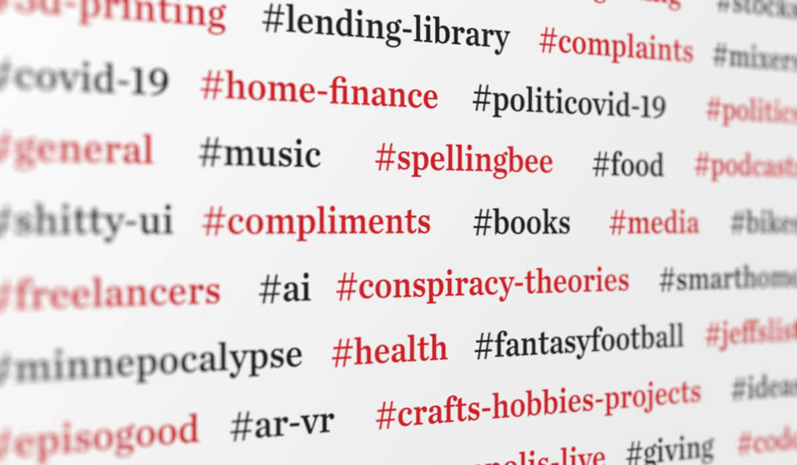
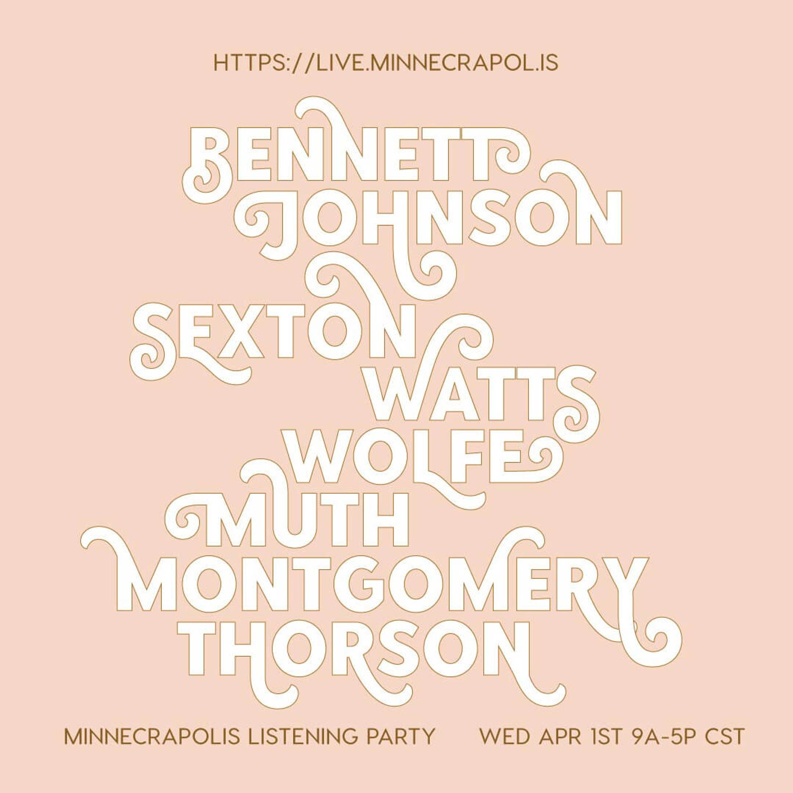
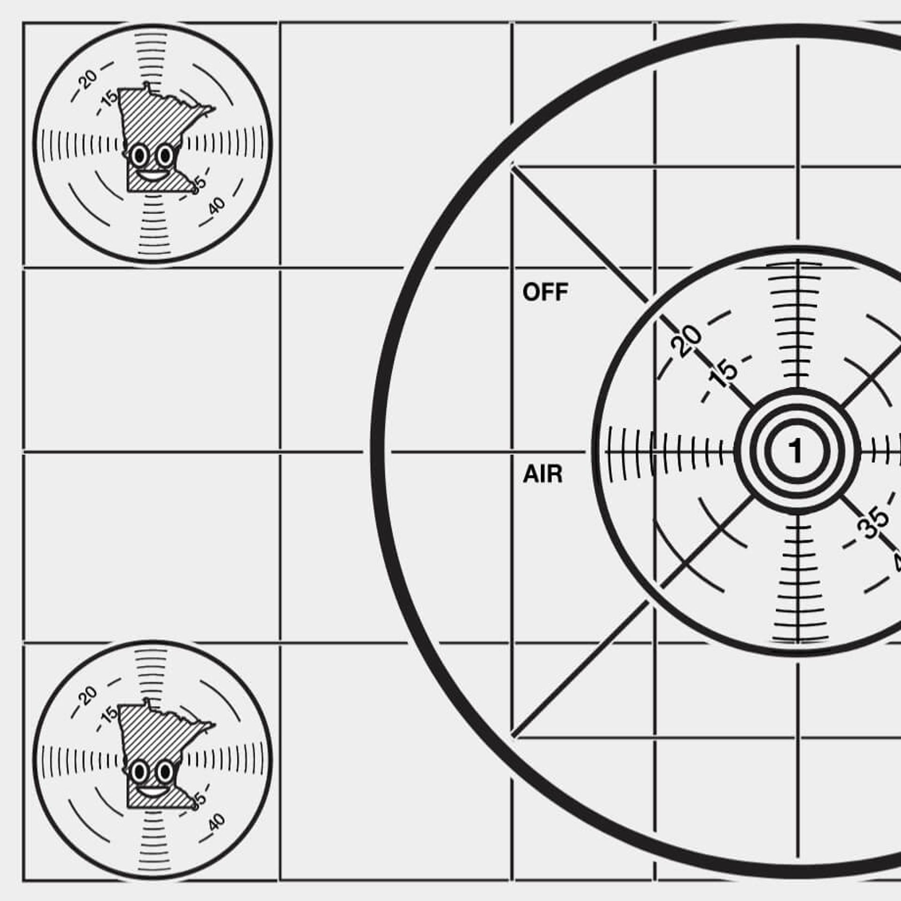
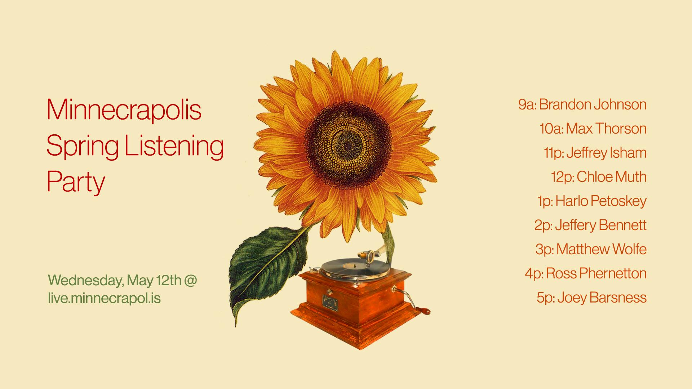

Minnecrapolis

I spun up a small email listserv amongst friends in 2013. Since then, it has organically blossomed into a Slack community with over 400 people, its own internet radio station & a tool-lending network.
We’ve sent 475,000 messages with an average of 90 members active every day & has been a necessary part of my sanity in times of pandemic.
Join today at https://minnecrapol.is
Special Thanks
The Minnecrapolis emoji logo was designed by Dan Holmoe.
The Minnecrapolis Live was developed by Max Thorson.

Fall Listening Party
Live
Spring Listening Party